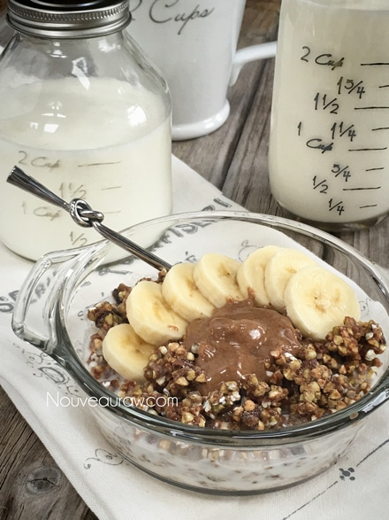

Cacao Buckwheat Puff Cereal

~ raw, vegan, gluten-free ~
I will admit, I was a huge fan of boxed cereal growing up. It was a staple in our pantry. I loved every single cereal that ever existed. Everything from Coco Puffs to All Bran… yes, All Bran, I was a weird child, and I guess a whole lot hasn’t really changed.
Well, over the years I have stopped eating boxed cereal. So I have to rely on making my own. Now, I am not here to claim that this recipe tastes JUST like Coco Puffs, this just is my take on it.
I was just looking to make a raw cereal that had crunch, would soften a bit in milk. The kind of cereal that would create a yummy chocolate milk that was left in the bowl after the last spoonful… in which the sacred act of raising the bowl to the lips and partaking of this luscious liquid took place. You know just what I am talking about. :)
I might not have been able to create perfectly round balls that with that light crunch/pop in the mouth when you bite down, but then again my recipe doesn’t the contain the following ingredients that process cereals contain; “sugar, corn meal, cocoa, canola and/or rice bran oil, corn syrup, corn starch, modified corn starch, cocoa processed with alkali, salt, calcium carbonate, fructose, beet powder and caramel color, trisodium phosphate, artificial flavor. Freshness preserved by BHT.”
So, if you are OK with NOT eating all that stuff, and would love to enjoy a bowl of raw, gluten-free cereal, please try this!
Yields 4 cups cereal
Preparation:
- If you don’t have the time to sprout the buckwheat, you can soak it for just 30 minutes.
- Once done soaking, drain and rinse for about 2 minutes under cool water.
- Add to a medium-sized mixing bowl.
- Add the cacao nibs, date paste, almond butter, cacao powder, stevia, and salt. Mix well. I prefer to use my hands.
- Spread this mixture out onto the non-stick Teflex sheets on your dehydrator trays.
- Dehydrate at 145 degrees (F) for 1 hour, then reduce to 115 degrees (F) for about 8 hours or until dry.
- Once dry, break into smaller pieces or (what I like to do) place the cereal in the food processor and break it down to a smaller crumble.
- Store in an airtight glass container. This will freeze well too!
- Serve with nut milk, topped with fresh banana and a dollop of almond butter for a nutritious breakfast.
- To learn more about maple syrup by clicking (here).
- Click (here) to learn why I use stevia.
- Dates are an amazing ingredient for raw food recipes, click (here) to read why.
- What is raw cacao powder?
- What is Himalayan pink salt and does it really matter? Click (here) to read more about it.
- Learn how to make your own raw almond butter by clicking (here).
Culinary Explanations:
- Why do I start the dehydrator at 145 degrees (F)? Click (here) to learn the reason behind this.
- When working with fresh ingredients, it is important to taste test as you build a recipe. Learn why (here).
- Don’t own a dehydrator? Learn how to use your oven (here). I do however truly believe that it is a worthwhile investment. Click (here) to learn what I use.

© AmieSue.com